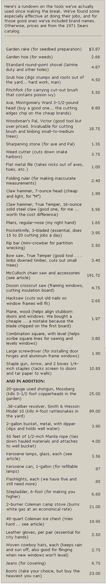
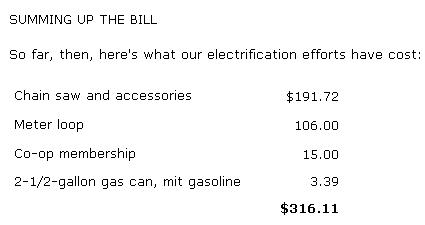

Fact: If you want to be free of the city, you've first gotta come up with the "front money".
Maybebe you'd rather not believe me when I say that you need 3 bankrolls to homestead. You may, in that case, be in shockfor when you hit the backroads and start checking out rural acreage prices. We've found that those costs are Pikes Peakhigh and going higher.
For example, in 1960, when we first decided on an eventual move back to the land, I could have bought my present 160 acres of Ozark rocks (if I'd had the money, which I didn't) by taking over the owners' $25.00-per-month payments on top of $100 cash.
By September 1971, when we'd finally gotten our capital together, the place certainly hadn't been improved any. In fact, the barn had fallen, the 24' X 24' cabin had seriously deteriorated and the electricity had been taken out. Neverthe less, the property cost us $4,500 down and $132 a month-at interest on our loan-for the next 10 years. That works out at $90.00 an acre, or a total of $14,400 for a farm I could have bought 11 years ago for $ 2,600.
Were we taken? No. In comparison to other acreage in this northwest corner of Arkansas, we got a fair price. Around here farmland on paved roads starts at $300 an acre ... and this is a government-designated poverty pocket. If you need additional proof that front money is essential, try talking $90.00 an acre to a real estate agent in your own area.
I'll say it again: If you want out, it takes down-payment bucks. Also, besides the front money, homesteading means tools ... and they too cost. Even a biceps-powered garden till advertised in MOTHER, runs $21.95.
So, how do you do it? How do you crank up a $500 or $1,000 down payment-plus tool money-for your own version of Walden or Malabar or whatever?
What follows are some tricks my wife and I used to get that necessary investment ... despite my being in a low-paying career field (social work) and despite our having five children. I've also included some specific examples of the kind of money problems we've run into since buying and moving into 'Outlaws Area No. 1".
A FRONT MONEY THEORY THAT WORKED
When we started stashing away our future down payment, we found we had to throw out some of the old money-management rules and start fresh. For instance, we learned the hard way to ignore financial advice given by city experts . I like this guideline from Sylvia Porter; "You can safely budget up to 20% of your income for installment payments."
Instead, we've found that the would-be homesteader needs a whole new economics textbook. And for us, that book's first rule was: "It's not how much you make, but how much you keep." Or, in plainer words, cut down the spending and bank the cuttings.
Here's an illustration: In 1962, our monthly food bill-for seven people-ran $75.00 ... a figure that's slowly inched its inflationary way up to $120 in 1971. According to USDA budget sheets I've used to counsel debt-ridden clients, that monthly sum should have been $300 to $350. Over nine years, of careful shopping we conservatively estimate that we've banked $4,000 saved on groceries alone, and I can't honestly say that we've eaten all that badly.
How did we manage? For specifics, I refer you to Joan Ranson Shortney's How to Live on Nothing (the Pocket Book edition is 95 cents) and to Champagne Living on a Beer Budget by Mike and Marilyn Ferguson (out of print ... see your library). For a general guide, though, I offer a theory "M" and I used: "Anything we go through today to get our place, we'll not remember when we're on the land and free."
EXTRA MONEY ON THE JOB
Another pointer for anyone who's trying to get homesteading money together: Milk your job/career for every dime. Obviously, I'm not talking about the status racket played by the pyramid climbers. I mean picking up on the deals every occupation offers occasionally, deals that no one else wants because they might mean extra work or inconvenience. These windfalls give you a chance to keep more of what you make ... to put more "land bucks" away.
Our own wrinkle was working overseas. Of the ten years I caseworked for the American Red Cross' military welfare program, six were spent in such places as Korea, Vietnam, the Philippines and West Berlin.
Yes, I was separated from "M" for a total of 26 months ... and I was sometimes shot at. But, "Anything we go through today What mattered was that we walked away with $13,400.
You can save like that overseas because of three built-in benefits. One is that most companies lure you across by paying bonuses-or extra amounts per diem-for service abroad. In our case, for my 366 days, 12 hours and 37 seconds in Vietnam, Red Cross shelled out an extra $4,135.
Second, living is cheaper outside the U.S. of A. Whenever we were out of the country "The Bloody X" (the Red Cross) provided free housing, free utilities and free hospital care. We also had access to military post exchanges for such bargains as a $274 Singer sewing machine for $141 and an $86.00 Winchester .30-30 rifle for $56.00. Then, too, the foreign local markets are usually less expensive. We bought our new station wagon in Berlin for $1,975 when the same car selling for $2,815 on the East Coast.
Third, there's no U.S. income tax on overseas earnings ...under certain conditions. If you work out of the States for 510 days without coming back in for more than 30 days. any up to $20,000 is tax-free (as long as you aren't employed by a government agency). We paid Uncle Sam nothing from 1964 through 1971. See what I mean about deals?
BACK TO THE LAND . . . AT LAST
Did our money-saving schemes work? I think they did they got us Outlaw Area No. 1. And Outlaw is beautiful. It's on top of one of the forested Boston Mountains, eleven miles from the nearest town and two from pavement. We have a Pre-Civil War log cabin, a hand-dug well and the already mentioned 576-square-foot frame dwelling. The place is remote,quiet, wild and offers a 360-degree view of nothing but mountains and more mountains.
Next question: Was our long wait worth it, or could we have homesteaded Outlaw without that much cash? Well, perhaps I can best answer by describing just one problem we ran into as beginners on the land.
ELECTRICITY EQUALS POWER
Since our arrival at Outlaw (June 4, 1972) we've found the inadequate lighting and lack of refrigeration very frustrating. In our first month, for example, we lost $13.00 worth of meat milk and eggs because our large Coleman ice chest just cannot cope with 92°F days.
Same with lighting ... we started off primitive and cheap with four old-timey glass kerosene lamps. Their totally silent, soft glow, I must admit, is very "homestead feeling".
Nevertheless-as any optometrist will tell you-trying to read by kerosene's flickering 25-watt light will eventually damage your eyes. For an alternative you can go to pressurized 100-watt Coleman or Aladdin lamps ... but, to quote The Whole Earth Catalog, the Colemans "clank and hiss at you, like civilization". And the Aladdins cost from $22.00 to $44.00 a crack.
So, for us, Ben Franklin had the answer ... but before we throw a switch, I reckon that the final tab will run $700.
BIG BROTHER IS EXPENSIVE
After we'd been here a week, I rolled in to the office of the local Rural Electrification Administration to find out what we'd have to do to get power at Outlaw. And here's what I learned.
The REA's standard written agreement provides that-before anything else can happen-the party of the first part ("M" and I) must clear a 20-foot easement from the company's closest main powerline to our property's meter, or main power pole. After we cut the initial swath, the party of the second part (Big Brother) will put in and maintain the poles and exterior lines. Also, thereafter, Ol' Big keeps the aforementioned easement open.
It all seemed no sweat ... until the company's survey team arrived. We then learned that the REA people only put in their service on a straight line (it saves them money not to jink all over the landscape). Unfortunately, that meant the Administration wouldn't be stringing the wires up our curving mountain road, as I'd hoped, thereby reducing our clearing operation to nearly nothing. No, they're coming through our north pastures . . . a distance of 1,730 feet!
The problem is that in the thirteen years since this place last had people and the eight years since it last had electricity, those fields have grown to a jungle of buck brush, greenbrier, sticker trees (honey locust) and persimmon trees. And, even before we started putting in the second Alcan Highway through that undergrowth, some other miscellaneous costs had to be met.
The first expense was $15.00 to join Big Brother (a co-op). Next we were required to buy a 150-amp "meter loop" . . . the gizmo that contains the meter and links the main lines with our house. REA supplied the meter housing free ... but the guts, weatherproof casings and inner wires had to be connected and stuffed into a not-free, 15-foot pipe affair which will attach to our main power pole like a rain spout to a house. A local lumberyard put this arrangement together for $106. (We could have had a smaller-capacity 60-amp loop for only $60.00-or a 100-amp model for $85.00-but we'll eventually want electricity for future outbuildings without having to pay for another loop installation.)
The final good news came by letter: Our minimum monthly bill for the next three years will run $11.47. It seems that Ol' Big allows $1,000 for the poles, lines and labor, and our hookup will cost $412.94 over that allotment.
SCALPING OUR NORTH PASTURES
Meanwhile, there was still the matter of that 20-foot easement. I don't yet have the time to do the required clearing, and bulldozing costs 50 cents a foot ... so I've hired a local friend at $2.00 an hour. The kicker is that I must supply the chain saw, gas and oil.
I decided to buy rather than rent the saw because I'll need winter firewood. It recently took an axe and me two hours to cut down an elm tree 30 inches in diameter, and that's a poor use of scarce time.
OK. Whole Earth says McCulloch and Homelite are the Chevy and Ford of chain saws. Looking around here, I counted one helluva lot of McCullochs, so that's what I bought: a Mac 10-10 Automatic, complete with engine oil, file and file guide, a protective plastic chain guard and a quart of McCulloch chain oil. Total expense. $191.72.
In addition, I figure the clearing will run $100 (gas, oil and friendly labor). I also calculate that it'll take $100 to rewire the cabin, $100 for inexperienced estimating and a final $75.00 for miscellaneous (foul-ups, supply trips to town, meals for uninvited but nonetheless friendly labor, etc.). Total cost, $700.
Maybe now it's apparent why we took those 12 years to get our bankroll. We obviously approve of the gentle folk getting back to the earth. I suspect, however, that the dudes who are trying to make it on bubble gum and balin' wire are not going to last. Farming takes money, and anyone coming to the country with the idea, "Oh, we'll figure something out," had better forget the whole business. That's a one-year attitude ... meaning that's about how long such people will survive.
So, how much is enough? What will it take to really go a-homesteading? How high is up?
Our answer: Get together every cent you can. Then cut for the timber, and make your bankroll last.
|
 |
 |
|